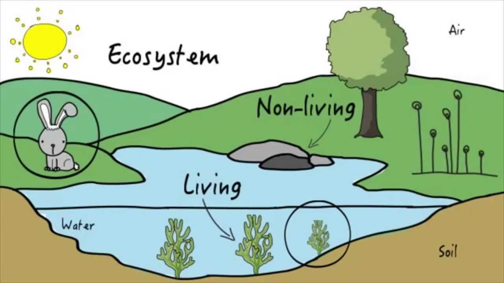
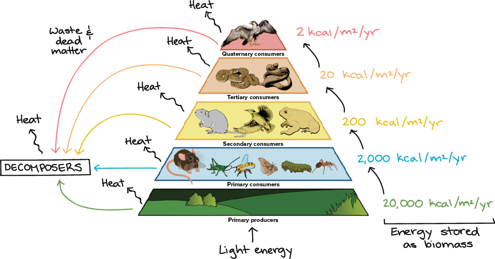

WHAT IS ECOSYSTEM?
Ecosystem is a system we all live in. It is not only humans who live in an ecosystem. We share ecosystem with all the animals in the world. Animals are just in the ecosystem to live. Humans are destroying the place we all share to live. Ecosystem determine the health of the earth system and we can’t say that it is in the best form possible. One of the cause of unhealthy ecosystem is extinction of animals.

WHAT IS FOOD CHAIN?
The food chain is the chain that leads one animal to another. If one animal is extinct and goes missing the whole food chain will collapse. Humans are also involved in the food chain. If we run out food because we keep killing animals for jewelries and for money. Food chain is also a big reason to why we should keep the ecosystem healthy all the time.
